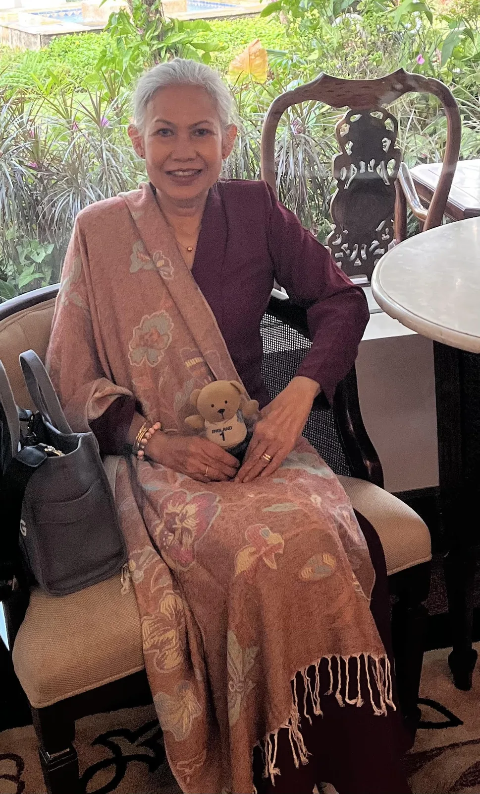
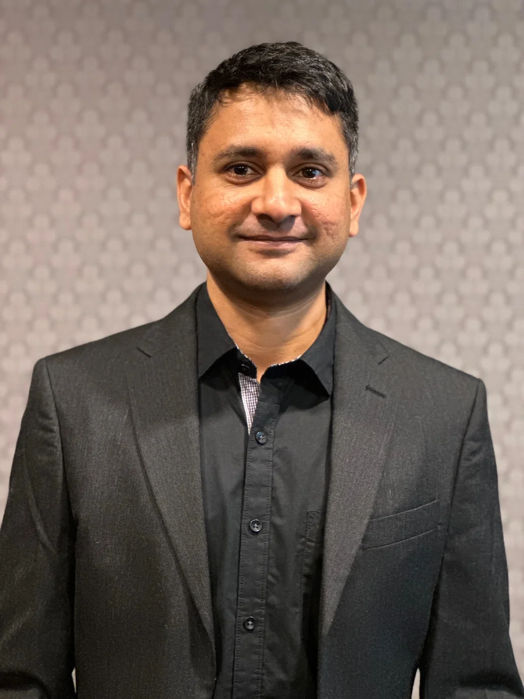
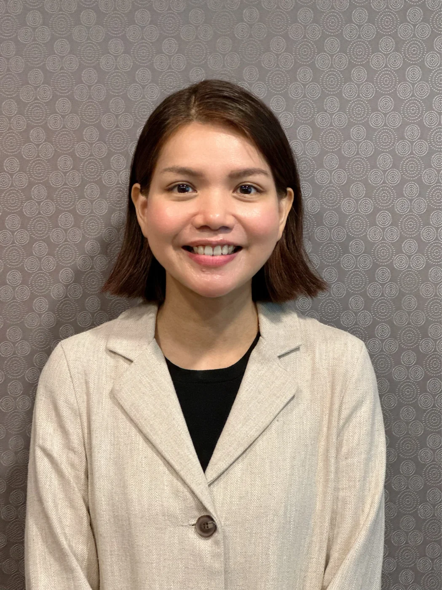
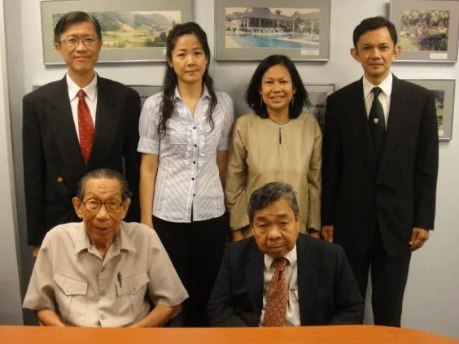
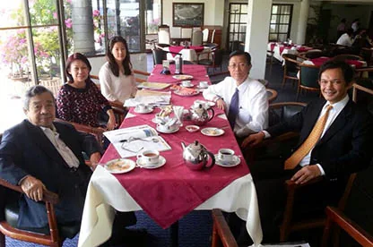

CHAIRMAN
Puan Ellina binti Abdul Majid
Appointed Chairman on 29 August 2022 after serving as a Director since 2010. Holds an honours degree in Law & Anthropology from the University of London.
GOVERNANCE
Current leadership, institutional memory and governance records are separated clearly so that responsibility is visible without overwhelming the visitor.
CURRENT LEADERSHIP
The current public YTAH record lists Puan Ellina binti Abdul Majid as Chairman, supported by four Directors.

Appointed Chairman on 29 August 2022 after serving as a Director since 2010. Holds an honours degree in Law & Anthropology from the University of London.

Director since September 2019, with experience spanning public health, CSR, research, grants administration and advocacy.

Member since 2012 and Director since January 2023. Legally trained with experience in investment policy and capital-market regulation.
Director since January 2023. Legally trained with corporate-sector experience and qualifications in law, business and fraud examination.
Director since December 2024, with a background in education and active involvement in non-profit work.
MEMBERS
ADVISOR
LEADERSHIP HISTORY
Chairman from the foundation’s inception in 1996 until his death in 2009.
Director from 2006; Chairman from 2009 until retirement on 29 August 2022.
Director from 5 August 2009 until retirement on 29 August 2022.


GOVERNANCE RECORDS
YTAH states that its Board meets four times a year in compliance with its Memorandum & Articles of Association.
8 February · 17 May · 23 August
30 March · 15 June · 14 September · 30 November
28 January · 25 March · 17 June · 23 September · 16 December
28 March · 20 June · 29 August. The December meeting was postponed to 28 January 2023.
20 March · June meeting cancelled due to movement restrictions · 25 September · 18 December.